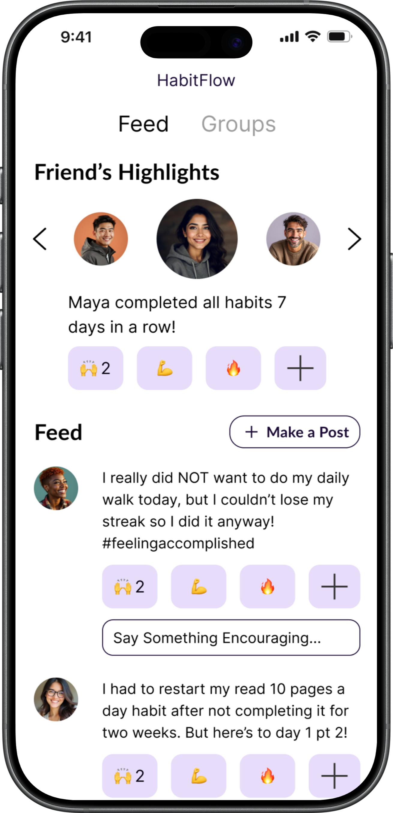
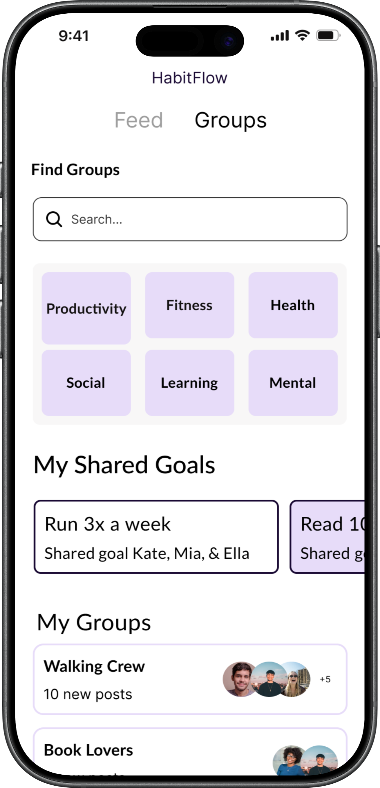

Janai Adams | UX Researcher & Designer
Hi everyone! My name is Janai Adams, I am a mixed-methods UX Researcher and Designer passionate about building and improving tools that simplify users' workflows and keep complex systems running efficiently. I am especially drawn to health informatics, where thoughtful UX can transform how consumers understand and manage their health while helping providers streamline their workflows.
Project Showcase
[Mixed-Methods, Consumer Health]
HabitFlow
Reach a flow state with habit formation
UX Researcher & Designer
Jan 2026 - Apr 2026
A science-backed habit-building app that uses social accountability and personalized motivation to help users reach sustainable goals.


[Published Research, Qualitative]
It's just that subtle feeling of being transported: Music as a Digital Possession after a Romantic Relationship Ends
UX Researcher & Project Manager
Jul 2022 - Aug 2023
An exploration of how music functions as a form of data people manage after a breakup — synthesized from 324+ articles into three core research themes, published as a poster at iConference 2023.